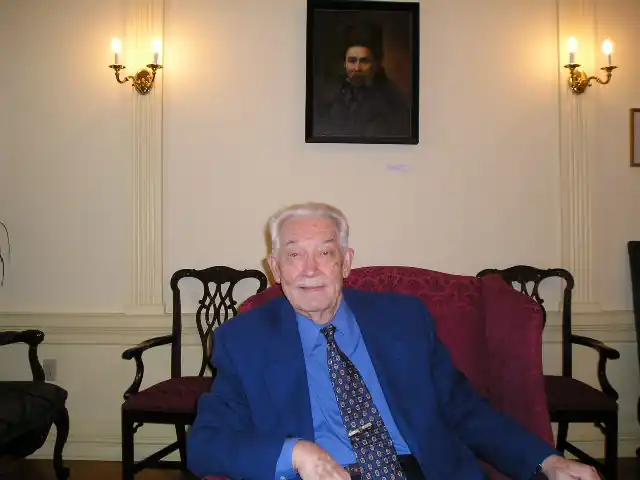

З далекого заокеання хвилі радіостанції "Голос Америки" з Вашингтону майже кожного вечора доносили до України слово нашого земляка Володимира Біляїва. Він був у 80-90 роках керівником українського відділу радіостанції , передачі якої, згідно з приблизними підрахунками, регулярно слухає від п'яти до семи мільйонів людей в Україні. Відомим як поет діаспори Біляїв став з початку сімдесятих років, коли вийшла перша збірка його поезій "Поліття". А вже з виданням другої книжки "По той бік щастя" (1979) українська літературна громадськість Америки вшанувала талант поета званням лауреата Української Могиляїнської Академії Наук за 1980 рік.
На початку 2001 року була видана вже в Україні, на батьківщині письменника, у Донецьку, його третя книжка віршів— "Осіння обнова". До неї увійшли поезії, написані у 80-хі 90-х роках, а також деякі твори із попередніх збірників.
Крім названих видань, Біляїв є автором науково-популярного нарису про видатну співачку Олену Шишацьку-Карапетян, десятків статей, есе на теми політики, літератури, суспільного життя, які друкувались у численних українських періодичних виданнях як на Заході, так і в Україні ("Всесвіт", "Березіль", "Літературна Україна" та ін.). Як же склалася доля цієї обдарованої людини, як їй вдалося зберегти і збагачувати на чужині рідне слово? Володимир Іванович Біляїв народився 25 червня 1925 року в селищі Мосьпине в родині гірничого інженера. Тут він вчився в школі. Сталінськими енкаведистами у кінці тридцятих років було арештовано батька майбутнього поета. Хоча дитинство проходить в зрусифікованому середовищі, серце Володимиравідкрилось рідному слову. Ось як про це розповідає В. Бі-ляїв у своїй автобіографії: "Моє знайомство з українським поетичним словом я завдячую матері моїй і тітці. Неписьменні жінки-селянки, що походили з Білоцерківщини, вони з ранніх дитячих літ моїх в умовах поспіль зрусифікованого індустріального Донбасу зріднили мене не тільки з самою мовою, але й з українською піснею, казкою й звичаями, вірніше переказами про звичаї стародавнього українського побуту. Моїми улюбленими піснями були "Стоїть явір над водою" та пісня про Морозенка. Ці пісні, як і молитву "Отче наш", я вже знав з тієї пори, відколи починає діяти пам'ять про людей, місця й події в житті родини і найближчого оточення". У своїх поетичних творах вже в далекій Америці В. Бі-ляїв не раз згадуватиме рідний край, Донеччину, звідки повіз з собою у далекий світ пам'ять про матір, степ, Савур-Могилу. Згадуватиме він через багато років і свого вчителя української мови і литератури Павла Остаповича Білоконя, який намовляв його писати вірші. І така спроба одного разу сталася: хлопчик написав поезію, присвячену Кобзареві. "Але, — згадував пізніше поет,—Павло Остапович так виправив вірша, що автором треба вважати мого вчителя". Хороших вчителів не бракувало Біляїву ні вдома, в Україні. ні за кордоном, куди він був вивезений у 1943 році на роботу до Німеччини. Особисто сам він вважає своїми натхненниками Тараса Шевченка, Володимира Сосюру, Максима Рильського, Леоніда Первомайского, а з тих письменників, які належать до діаспори, — Юрія Клена, Євгена Маланюка, Леоніда Мосендза, Оксану Лятуринську, Олега Ольжича, Теодосія Осьмачку, Олену Телігу, Іваїна Багряного. Ремінісценції з їхньої творчості часто можна відчути в поетичному слові Біляїва. Після закінчення другої світової війни доля кидала В. Біляїва по світах то службовцем у повітряних силах США в Європі, то співробітником газети "Українські вісті" (Німеччина), часописів "Єдність" та "Вільна Думка" (Австралія). У п'ятдесятих роках він осідає у Сполучених Штатах Америки, де займається журналістською працею, дописуючи до багатьох українських періодичних видань. Вірші почав писати систематично в Німеччині. Першим твором за межами України був "Ранок" (1946 р,), про який поет скромно згадує, як про "таку собі мініатюру": Біжить стрічати ранок за село. Вірш автор вважає твором "початкової дитячої ще поезії" (із автобіографічних матеріалів—О. В.). І все ж, зауважимо, що тут відчутне тепло рідної землі, віра в світле майбутнє, яке повинно прийти, хоча поета оточувала сувора реальність чужини. Природа та долі земляків стануть предметом художнього пізнання Біляїва. Його творчість знаходить позитивну оцінку літературних критиків з діаспори Г.Костюка, М. Степаненка, Н. Пазуняк. А відзначення поета високим званням лауреата УМАН остаточно утвердило за ним ім'я знаного і шанованого майстра поетичного слова. Що є провідним у творчості нашого земляка? Спочатку звернемося до естетичного кредо поета, висловленого ним у шістдесяті роки, і яке він сповідує й досі. Тоді він писав: "В добу індустрії, комерціалізації і надзвичайного розвитку науки поезія в житті переважаючої кількості моїх сучасників є чимось несуттєвим. На мою думку, скільки б добра і користі не приносили (Три основні компоненти нашої доби — поезія назавжди залишиться непідкупним літописом духовного стану людства в цілому і ножного народу зокрема". Поет, слідуючи естетичній настанові класиків української літератури, вбачає в піоетичному слові порадника, виразника народних сподівань та прагнень. Літературознавець Григорій Костюк назвав творчість Біляїва "поезією, проникнутою ідеєю". І це справді так. В час, коли поет став входити в літературне життя, багато поетів у своїх поетичних експериментах часто відривалися від реальності, надаючи художньому слову роль "поезії для поетів", тобто дляобраних. В. Біляїв пішов своїм шляхом, ставлячи за мету творити "літопис духовного стану народу". Додамо — українського народу, який піднявся у ХХ-му столітті виборювати свободу і незалежність, У віршах нашого земляка провідною є тема матері і материнства. Мати для Біляїва є уособленням основи і початку життя не тільки в матеріальному, але й духовному значенні. У вірші "Мати" поет виголошує: В далеку путь рушають парубки. Тему матері, суголосну своїм творам, В. Біляїв знаходить і в таких видатних майстрів мистецтва слова, як італійський поет Сальваторе Квазімодо і шведський поет Верінер фон Гайденстам. їхні вірші у перекладі Біляїва доповнюють образ матері-жінки, яка "розділює любов синам далеким" (С. Квазімодо, "Лист до матері"). Синівська вдячність за .подароване життя і за материнську науку проймає не один вірш В. Біляїва. Образ матері, святої матері — це уособлення рідної землі, яка залишилася в серці поета назавжди. Цікавою в Біляїва є й пейзажна лірика Часто це вірші про міста, селища, села, моря, океани, які в подорожах по світу бачив поет. Але особливістю творів є постійне звернення автора до картин рідного краю, Донеччини. Передусім — це краєвиди донецького степу. Азовського моря та інших куточків рідного пейзажу. Картини-асоціації, пов'язані з Придінців'ям, є для Біляїва не лише зовнішнім проявом любові до землі. Зі степом він пов'язаний генетичне, кров'ю давніх степовиків, своїх предків. Поет по-синівськи проголошує: ("Над морем") Ось чому степ для поета є не лише образом-спомином про рідний край. Спокійна хвиля степу є внутрішньою сутністю рідної землі, в глибинний зміст якої він прагне заглянути. Тема степу єднає поетичне слово В. Біляїва з творчістю таких наших земляків, як М. Чернявський, С. Черкасенко, X. Алчевська. Але в його творі образ степу набирає особливого звучання, пов'язаного з гіркотою споминів про далекий рідний край. Поет відтворює природу неповторними барвами. У нього не просто вишні будуть цвісти, а "метеликами цвіт обляже вишники", верби не схиляються ,над водою, а "шукають броду", вітряного дня дерева не просто підіймають свої віти, а "пірнають у вітряну купіль за крилами лелечими". Поет .бачить чайку, "як тепла і лету білоперий жмуток", і чує "вдари хвиль, немов звучання рим". Рельєфні, барвисті картини хвилюють читача, Для ліричного героя В. Біляїва є властивими роздуми над сенсом людського життя, над добром і злом. Вірші такого спрямування пройняті ідеєю пошуку щастя. " —: У кращих традиціях української класики поет дотримується єдності форми з досконалістю змісту, ось хоча б такі рядки: ("Напередодні") В. Біляїв — патріот, це знайшло відображення в багатьох поезіях. Через усю творчість проходить думка про неминучість приходу в рідний край свободи під знаком "Тризуба — сокола вогнекрилого". У віршах-епітафіях поет схиляється перед улюбленими творцями слова чи дії: Симоном Петлюрою, Іваном Багряним, Євгеном Маланюком, Галиною Журбою та іншими видатними синами і дочками українського народу, У поемі "Розмова з ровесником", уривок з якої надруковано в збірці "По той бік щастя", звучить гостра інвектива — звинувачення на адресу майстрів нелюдської розправи", які були вірними ідеям миколаївських фельдфебелів і капралів, "що шкуру з наших прадідів здирали", іут присутні "І ленінські дзержинці-сіроманці", і сталінська "єжова рукавиця", І Смерша закривавлена правиця — "тюремної імперії незмінний страж". Згадує автор пекучим словом і своїх земляків-перевертнів: Собі хихикають в кулак! Поет продовжує традицію свого великого попередника, зображуючи нащадків "синів сердешної України" (Шевченко). В одному з віршів збірки ,"По той бік щастя" поет так висловив своє кредо: ("Слово моє") Так, вірші Володимира Біляїва зичать людям щастя і добра, вони свідчать про синівську любов поета до рідної землі, палке бажання працювати в ім'я її визволення. Творчість нашого земляка знаходить тепер свого читача уже й на вільній батьківщині.